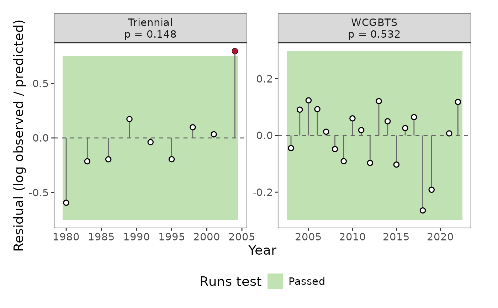

Plot the residuals of the fit to each index over time with three-sigma
control limits and a runs test for non-random residuals (Carvalho et al.
2017), as in JABBA and ss3diags (SSplotRunstest()).
plot_runs_test(
dat,
fleet = NULL,
module = NULL,
interactive = TRUE,
ncol = NULL,
make_rda = FALSE,
figures_dir = getwd()
)A tibble from convert_output() with labels "index_observed"
and "index_predicted".
Character vector. Fleet(s) to plot. Default: NULL (all fleets)
Character vector. (Optional) Module name found in dat$module_name.
If selecting >1 module, place them in a vector like c("module1", "module2").
Default: NULL
If the interactive and >1 module_name is found, user will select the
module_name in the console. @seealso filter_data()
Logical. TRUE/FALSE; indicate whether the environment is interactive.
Default: FALSE
Number. Number of columns of panels. Default: NULL
Logical. TRUE/FALSE; indicate whether to save the object and
make an automated caption and alternative text in the form of an rda object. If TRUE,
the rda will be exported to the folder indicated in the argument "figures_dir".
Default: FALSE.
Path. Path to the "figures" folder.
Default: getwd()
The folder is created within the path if it does not exist.
A ggplot2 object.
Residuals are \(\log(o) - \log(p)\) for observed \(o\) and
predicted \(p\), assuming lognormal errors. The one-sided runs test
checks whether residual signs are random over time (normal
approximation, as in ss3diags). The shaded band spans the three-sigma
limits, with sigma from the average moving range; it is green when the
test passes (p >= 0.05) and red when it fails. Residuals outside the
limits are filled red.
No observations are dropped silently: a fleet observed in more than one area, season, subseason, month, or sex becomes separate series (e.g., "Survey (season 2)"), observations without a positive observed and predicted value are reported in a message, and output from more than one model or with values that cannot be told apart is an error. Years with no observed index (BAM reports every year) are not observations.
Carvalho, F., et al. 2017. Can diagnostic tests help identify model misspecification in integrated stock assessments? Fisheries Research 192: 28-40.
plot_runs_test(stockplotr::example_data, interactive = FALSE)
